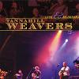

Celtic Lyrics Corner > Artists & Groups > Tannahill Weavers > Live & In Session > Dumbarton's Drums
|  | Dumbarton's Drums |
| Credits : | Traditional; arranged by the Tannahill Weavers |
| Appears On : | Live & In Session |
| Language : | Scots-English |
Lyrics :
My love, he is a handsome laddie
And though he is Dumbarton's caddie
Some day I'll be a captain's lady
When Johnnie tends his vows tae me
Chorus (after each verse)
:
Dumbarton's drums, they sound sae bonnie
When they remind me o' my Johnnie
What fond delight can steal upon me
When Johnnie kneels and kisses me
Across the hills of bounding heather
Dumbarton tolls the hour of pleasure
The joy I feel will ken nae measure
When Johnnie kneels and sings tae me
'Tis he alone that can delight me
His graceful eye, it does invite me
And when his tender arms enfold me
The blackest night will turn and die
(Chorus 2x)